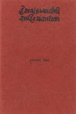
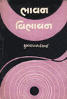
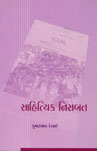
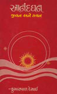

વિવેચન સાહિત્ય
શબ્દસંનિધિ (૧૯૮૦) ; હેમચંદ્રચાર્યની સાહિત્ય સાધના (૧૯૮૮) ; ભાવન-વિભાવન (૧૯૮૮) ; આનંદઘન : જીવન અને કવન (૧૯૮૮) ; શબ્દસમીપ (૨૦૦૨) ; સાહિત્યિક નિસબત (૨૦૦૮) |
||
|  |
કલિકાલસર્વજ્ઞ હેમચંદ્રાચાર્યની વિરાટ પ્રતિભાનો ખ્યાલ આપતી આ પુસ્તિકામાં એમના સાહિત્ય વિશે વિગતે ચર્ચા કરવામાં આવી છે. કાવ્ય, ન્યાય, કોશ, છંદ, અલંકાર, ઇતિહાસ, પુરાણ અને વ્યાકરણ એમ સાહિત્યસ્વરૂપોમાં એમણે કરેલા ખેડાણને દર્શાવ્યું છે. એમની સાંસ્કારિક સાહિત્યિક સિદ્ધિઓનું આલેખન મળે છે. |
|
|  |
સર્જકના આ વિવેચન સંગ્રહમાં સાહિત્ય અને પત્રકારત્વ વિશેના લેખોનો એમાં સમાવેશ થયો છે. આ લેખોમાં મધ્યકાલીન ગુજરાતી સાહિત્ય, ગુજરાતી બાળસામયિકોની સાથોસાથ મહત્ત્વની સાહિત્યિક કૃતિઓનો રસાસ્વાદ કરાવ્યો છે. સાહિત્યના ભાવન અને વિભાવન બંનેને અનુલક્ષીને લખાયેલા જુદા જુદા લેખો મળે છે. |
|
|  |
ગુજરાતી સાહિત્ય પરિષદના સામયિક પરબમાં લખાયેલા પરિષદ પ્રમુખના પત્રોનો સંગ્રહ છે, જેમાં વર્તમાન સમયના સાહિત્યિક પ્રશ્નોની ચર્ચા છે. આમાં માતૃભાષાની સ્થિતિ, ગુજરાતી ડાયસ્પોરા સાહિત્ય, સર્જકોનાં ચરિત્રો, નવા વિષયોની ક્ષિતિજ, સાહિત્યિક વિવાદ વગેરે વિષયો પરના લેખો ધ્યાન ખેંચે તેવાં છે. |
|
|  |
મધ્યકાલીન સમયના રહસ્યમાર્ગી જૈન કવિ આનંદઘનજીના સર્જનોમાં તત્ત્વજ્ઞાનની ગહનતાની સાથોસાથ કાવ્યમાધુર્યની પરાકાષ્ઠા જોવા મળે છે. ચારસો હસ્તપ્રતોના આધારે એમની કૃતિઓનું સંશોધન કર્યું છે તેમ જ એમના પદો અને સ્તવનોમાં પ્રગટતી તેમની અધ્યાત્મ પ્રતિભા દર્શાવી છે તેમ જ જુદા જુદા ગ્રંથભંડારોમાં હસ્તપ્રતરૂપે રહેલી એમની અપ્રસિદ્ધ રચનાઓ સંશોધનરૂપે મૂકી છે. |
|
ડૉ. દેસાઈની વિવેચનાત્મક ગદ્યશૈલીમાં વિવરણાત્મક વિશદતા, વક્તવ્યની પારદર્શકતા, ભાષાની સરળતા, પ્રૌઢિ અને શાલીનતા જેવાં તત્ત્વો અનાયાસ પ્રકટી રહ્યાં છે. તેથી એમાં ક્યાંય પાંડિત્યની દુર્બોધતા નથી. યથાવકાશ મૂળ ગ્રંથોનાં દ્રષ્ટાંતો-અવતરણો એમનાં સંશોધન-વિવેચનને પ્રમાણભૂતતા અર્પે છે. આવી સંશોધનપૂત આલોચના અમનું મૂલ્યવાન પ્રદાન છે. |